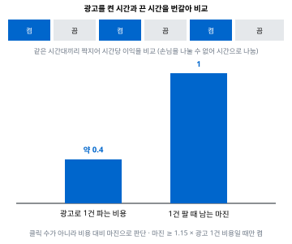

판매보다 주문 처리 서버를 먼저 만들고 결제 확인부터 발주와 발송, 정산 확인까지 자동으로 이어지게 했습니다. 판매 6일째 하루 1,378건을 혼자 처리했습니다.
공급처 응답이 불확실할 때는 다시 구매하지 않고 보류한 뒤 공급처 이력과 맞춰 복구하도록 해 이중 구매를 막았습니다. 운영 점검용 AI 에이전트는 미리 정한 조치만 할 수 있게 제한했습니다.

기존 챗봇은 파인튜닝 기반이라 새 사업을 넣으려면 다시 학습해야 했습니다. 게시판을 매일 수집해 임베딩하는 RAG 구조로 바꿔 복지사업 1,809건이 매일 새벽 반영되게 했습니다.
LLM이 질문 의도와 지역 · 대상 조건을 함께 뽑게 하고 실패하면 규칙으로 처리하게 했습니다. 기관 포털을 고칠 수 없어서 스크립트 한 줄로 붙는 위젯을 만들었습니다.


현장실습 때 외부 문서 서비스를 쓰면서 회사 문서는 올릴 수 없다는 문제를 겪고 회사가 직접 운영하는 사내 버전을 팀에 제안했습니다.
검색 엔진을 맡아 키워드 검색과 의미 검색을 합친 점수를 만들었고 AI 도구가 요약 목록을 먼저 받고 필요한 원문만 가져가는 2단계 검색 API를 만들었습니다.


공급처가 5xx나 네트워크 오류를 주면 구매가 됐는지 알 수 없었습니다. 재시도하면 이미 결제된 구매를 한 번 더 할 수 있었습니다.
재시도 → 이중 구매 위험
실패 처리 → 이미 산 상품을 버리고 손님은 못 받음
채택 결과를 모르는 상태로 보류한 뒤 공급처 이력과 대조
결과를 모르는 주문은 다시 사지 않고 보류한 뒤 공급처 주문 이력에서 정확히 1건이 맞을 때만 복구했습니다. 중복 처리는 주문번호 UNIQUE와 조건부 UPDATE로 DB가 막게 했습니다. 0건이거나 여러 건이면 사람 검토로 넘겼습니다.
대신 결과를 모르는 주문은 처리가 몇 분 늦어집니다. 늦는 것보다 두 번 사는 쪽이 훨씬 비싸다고 판단했습니다.
하루 1,378건이 몰린 날에도 발송은 자동으로 처리됐고 이 상황은 재현 테스트로 고정했습니다.

클릭과 노출 지표만으로는 광고가 이익을 남기는지 알 수 없었습니다.
손님을 둘로 나눌 수 없어서 광고를 켠 시간과 끈 시간을 번갈아 두고 같은 시간대끼리 비교했습니다. 판단 기준은 광고로 1건 파는 비용과 1건 마진으로 잡았고 자동 조정도 마진이 그 비용의 1.15배 이상일 때만 켜지게 했습니다.
실험하는 동안 광고를 끈 시간대의 판매 일부를 포기했습니다. 대신 감이 아닌 근거로 예산을 정할 수 있었습니다.
광고로 1건 파는 비용이 마진의 약 40%인 것을 확인한 뒤에야 하루 예산 상한을 올렸고 하루 1,378건까지 판매를 늘렸습니다.

기존 챗봇은 학습된 Q&A 범위 안에서만 답했고 새 사업을 반영하려면 다시 학습해야 했습니다.
재학습 주기화 → 학습 비용이 들고 그 사이 정보는 계속 낡음
채택 모델은 그대로 두고 매일 갱신되는 데이터를 찾아 답하는 RAG
게시판에서 바뀐 사업만 매일 수집해 500자 이하 조각으로 나누고 bge-m3로 임베딩했습니다. PostgreSQL에 pgvector를 붙여 조건 필터와 의미 검색을 한 쿼리에서 처리했습니다.
전용 벡터 DB의 확장성보다 기관이 관리할 시스템을 하나로 줄이는 쪽을 골랐습니다. 사업과 시설 2만 건 규모와 기관의 운영 인력을 기준으로 한 판단입니다.
재학습 없이 복지사업 1,809건이 매일 새벽 반영되고 찾은 원문과 공식 링크를 근거로 답합니다. 단순 키워드 검색으로는 0건이던 "치매" 관련 질문에서도 관련 사업을 찾아 안내했습니다.

"안녕하세요 이런 지원을 받고 싶어요"가 인사로 분류돼 검색이 빠졌고 규칙을 하나 막으면 다른 표현에서 다시 깨졌습니다.
규칙 추가 → 표현은 끝이 없어 계속 깨짐
LLM만 사용 → 장애나 형식 오류 때 서비스가 멈춤
채택 LLM으로 판단하고 실패하면 규칙으로 처리
LLM이 의도와 지역 · 대상 · 분야 조건을 JSON으로 한 번에 뽑게 하고 실패하면 규칙으로 처리하게 했습니다. 정렬은 신청할 수 있는 사업이 먼저 오도록 바꿨습니다.
LLM 호출만큼 응답이 느려져서 답을 SSE로 한 글자씩 흘려보내 기다리는 느낌을 줄였습니다.
질문이 6가지 의도별 경로로 나뉘었고 LLM이 실패해도 서비스는 멈추지 않습니다.

검색 결과를 원문째 넘기면 AI 도구가 읽을 양이 너무 많아 핵심을 놓쳤습니다.
먼저 요약과 점수 목록을 주고 AI가 고른 조각만 원문으로 가져가게 했습니다. 원문이 상한을 넘으면 이진 탐색으로 앞부분을 남기며 잘랐습니다. 점수는 키워드와 의미 점수를 합쳐 0~1로 맞췄습니다.
순위만 남는 RRF 대신 점수 크기를 남겨 AI가 관련도를 비교할 수 있게 했습니다. 근사 검색 대신 정확히 계산하는 방식을 골랐고 규모가 커지면 후보를 먼저 줄이는 단계를 앞에 붙이면 됩니다.
AI 도구는 고른 조각의 원문만 받고 문서 처리와 임베딩은 조직 안에서 돕니다. 학부 작품경진대회 은상을 받았습니다.
| 학력 | 전북대학교 컴퓨터공학부 · 2022.03 ~ 2026.02 전체 3.71 · 전공 3.83 / 4.5 · 3학년 2학기 전 과목 A+ 학과 1등 · 4학년 4.41 · 4.17 |
| 경력 | (주)텔로스 백엔드 개발 현장실습 · 2025.07 ~ 08 |
| 수상 | 작품경진대회 은상 · 캡스톤디자인 우수상 · 전북특별자치도사회서비스원 표창 |
| 자격증 | 정보처리기사 · SQLD · ADsP |
| Java | 현장실습 · OpenContext 백엔드 |
| Spring Boot | JPA · Spring Security · JWT |
| Python | 주문 자동화 시스템 |
| FastAPI | 복지 AI 챗봇 백엔드 |
| PostgreSQL | pgvector 벡터 검색 |
| Docker | Docker Compose · Nginx 배포 |
고객용과 점주용 앱을 나눈 지역 배달 플랫폼. AWS EC2와 GitHub Actions로 배포했습니다.
일정 기록에서 활동일지 Excel을 자동으로 만드는 서비스. 백엔드와 배포를 맡았습니다.